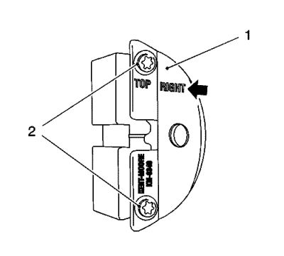

- Retire la tapa delantera superior de la correa de distribución. Consultar
Desmontaje de la cubierta delantera de la parte superior de la correa de distribución : 1.6L LDE, LXV y 1.8L 2H0 .

- Ajuste el motor al punto muerto superior (TDC).
Ajuste el compensador del cigüeñal en la dirección de giro del motor al "PMS del cilindro 1" (marca 1).
- Desmontar la tapa del árbol de levas. Consultar Desmontaje de la tapa del árbol de levas .

Nota: La mitad derecha de la herramienta de bloqueo EN-6340 se puede reconocer por el rótulo "Right", flecha, en la herramienta.
- Prepare la mitad derecha de la herramienta de bloqueo EN-6340.
| 4.1. | Desmonte la parte delantera (1) de la herramienta de bloqueo EN-6340 - derecha. |
| 4.2. | Retire los dos tornillos (2). |

Nota:
| • | La marca de punto (4) en el regulador del actuador de posición del árbol de levas de admisión no coincide con la ranura de la herramienta de bloqueo EN-6340 - izquierda (1) durante este proceso, sino que debe estar algo más arriba. |
| • | La marca de punto (3) en regulador del actuador de posición del árbol de levas de escape debe coincidir con la ranura de la herramienta de bloqueo EN-6340 - derecha (2). |
- Inserte la herramienta de bloqueo EN-6340 - izquierda (1) y la herramienta de bloqueo EN-6340 - derecha (2) en el regulador del actuador de posición del árbol de levas.

Nota: Si no se puede insertar la herramienta de bloqueo EN-6628-A, se debe ajustar la distribución.
- Alinee horizontalmente los árboles de levas por el hexágono (flechas) hasta que se pueda insertar la herramienta de bloqueo EN-6628-A en ambos árboles de levas.

- Inserte la herramienta de bloqueo EN-6628-A (1) en los árboles de levas.